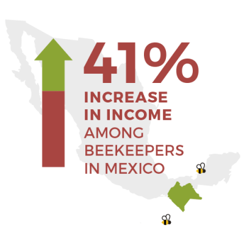
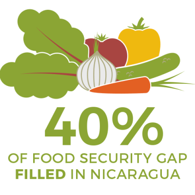
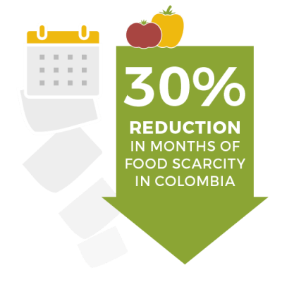

- OUR WORK
- THE CHALLENGES
- OUR IMPACT
Mission
We partner with coffee-farmingcommunities in Latin America to
cultivate a food-secure future. Our co-op
partners and the thousands of coffee-
farming families they represent are
working to put good, healthy food on
their tables every day.
We partner with coffee-farming communities in Latin America to cultivate a food-
secure future. Our co-op partners and the thousands of coffee-farming families
they represent are working to put good, healthy food on their tables every day.
Our Impact
We help coffee-growing communities strengthen local food systems, promote sustainable farming practices, diversify family livelihoods, and cultivate local leadership.



Help coffee-farming families and their communities access locally grown nutritious food, every day.
Blog
Voices of Change:
Women’s Evolving
Roles in Coffee-
Farming
Communities
Voices of Change:Women’s Evolving Roles in
Coffee-Farming Communities
Groundbreakers:
Unveiling the
Historic Impact of
Women in Coffee
Farming
Groundbreakers:
Unveiling the
Historic Impact of
Women in Coffee
Farming
More Than Links in the Supply Chain:
Why Laura
Peterson Supports
Food 4 Farmers
More Than Links in the Supply Chain:
Why Laura
Peterson Supports
Food 4 Farmers
The future of coffee
needs women – and
you!
The future of coffee needs women – and >you!
“It’s a great advantage to grow vegetables without pesticides so
we don’t jeopardize the health of our children.”
~ Rosibel Gonzalez, coffee farmer
Rosibel is a participant in our organic farmers market program with Nicaraguan coffee cooperative SOPPEXCCA.
70 S Winooski Ave
Ste 1W #312
Burlington, VT 05401 USA
Phone (802) 497-3304
Tax ID: 27-2267267